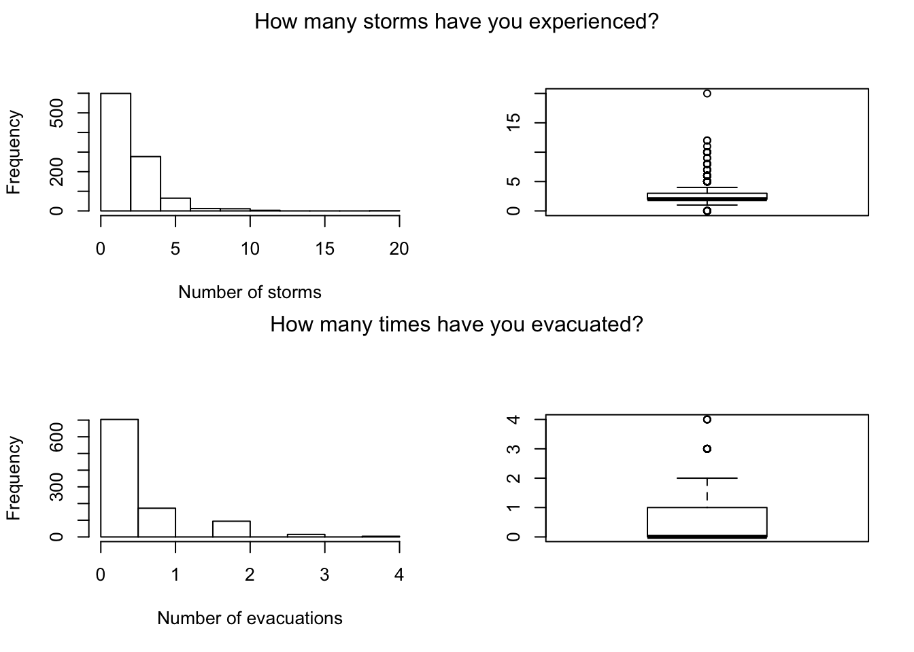
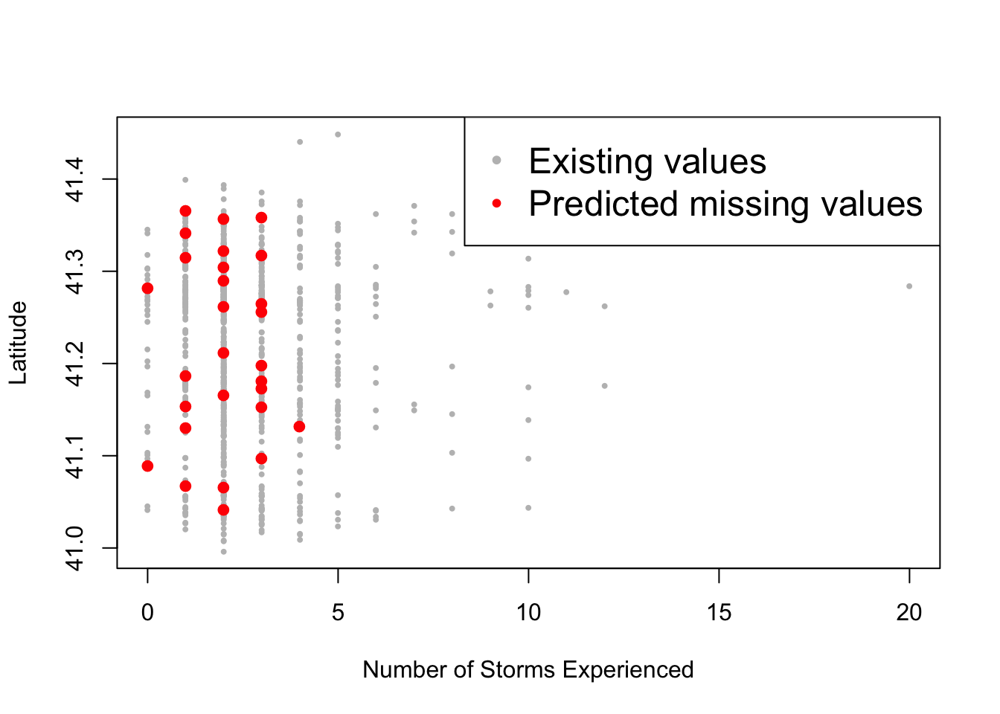

Data Cleaning and Filtering
1 Data Cleaning
Data cleaning is the process of correcting or removing inaccurate records of a “raw data” so that, after the treatment, the transformed data will have the quality necessary for statistical analysis or be consistent with an existing database. More explicitly, the variable names, types, and values will be consistent and uniform.
In order to clean a dataset, first, we need to be able to detect the anomalies within the data. Types of anomalies include the values that are stored in the wrong format (ex: a number stored as a string), the values that fall outside of the expected range (ex: outliers), values with inconsistent patterns (ex: dates stored as mm/dd/year vs dd/mm/year), trailing spaces in strings (ex: “data” vs “data”), etc.
One method of detecting these anomalies is the summary statistics of the variables, which can be obtained by using summary(). Here is an example using the hurricane data:
# Summary for a numerical variables
summary(hurricane$age)## Min. 1st Qu. Median Mean 3rd Qu. Max. NA's
## 19.00 49.00 60.00 58.69 69.00 106.00 40# Summary for a categorical variable
summary(factor(hurricane$prepared))## 1 2 3 4 5 NA's
## 92 322 428 130 17 7We also summarize all of the variables at once but first we have to set them to match their exact data types. If we run summary(hurricane) right away then we’ll get this unintended result:
## nstorm worry nevac prepared homeloc
## Min. : 0.000 Min. :1.000 Min. :0.0000 Min. :1.000 Min. :1.000
## 1st Qu.: 2.000 1st Qu.:3.000 1st Qu.:0.0000 1st Qu.:2.000 1st Qu.:1.000
## Median : 2.000 Median :4.000 Median :0.0000 Median :3.000 Median :2.000
## Mean : 2.584 Mean :4.235 Mean :0.4257 Mean :2.654 Mean :2.182
## 3rd Qu.: 3.000 3rd Qu.:5.000 3rd Qu.:1.0000 3rd Qu.:3.000 3rd Qu.:3.000
## Max. :20.000 Max. :7.000 Max. :4.0000 Max. :5.000 Max. :3.000
## NA's :28 NA's :5 NA's :7 NA's :7 NA's :11
## nyear gender income politics age
## Min. : 0.0 Min. :1.000 Min. :1.000 Min. :1.000 Min. : 19.00
## 1st Qu.:12.0 1st Qu.:1.000 1st Qu.:3.000 1st Qu.:2.000 1st Qu.: 49.00
## Median :25.0 Median :2.000 Median :4.000 Median :3.000 Median : 60.00
## Mean :28.8 Mean :1.545 Mean :3.751 Mean :2.889 Mean : 58.69
## 3rd Qu.:43.0 3rd Qu.:2.000 3rd Qu.:5.000 3rd Qu.:3.000 3rd Qu.: 69.00
## Max. :92.0 Max. :2.000 Max. :6.000 Max. :5.000 Max. :106.00
## NA's :15 NA's :32 NA's :100 NA's :81 NA's :40
## zone lat long
## A:622 Min. :41.00 Min. :-73.66
## B:374 1st Qu.:41.16 1st Qu.:-73.22
## Median :41.26 Median :-72.95
## Mean :41.22 Mean :-72.91
## 3rd Qu.:41.29 3rd Qu.:-72.67
## Max. :41.45 Max. :-71.83
## Variables like worry, prepared, homeloc, gender, income, politics are supposed to be categorical and not numeric. We can easily convert them using mutate_at() function from the dplyr package (also tidyverse)
# Converting data types
library(dplyr)
library(magrittr) # for %>%
hurricane %>% mutate_at(c("worry", "prepared", "homeloc", "gender", "income", "politics"), as.factor)## # A tibble: 996 x 13
## nstorm worry nevac prepared homeloc nyear gender income politics age zone lat
## <int> <fct> <int> <fct> <fct> <int> <fct> <fct> <fct> <int> <fct> <dbl>
## 1 2 3 0 3 2 86 1 4 3 86 A 41.3
## 2 1 4 0 3 3 25 1 <NA> <NA> 52 A 41.3
## 3 3 4 0 3 3 19 2 6 2 83 A 41.3
## 4 3 6 1 1 1 52 1 5 3 64 A 41.2
## 5 2 1 0 2 3 15 1 5 3 66 A 41.3
## 6 5 4 0 2 1 23 2 <NA> 3 76 A 41.3
## 7 3 6 1 3 3 36 2 <NA> 3 37 A 41.3
## 8 5 4 0 3 3 50 2 <NA> 3 50 A 41.2
## 9 1 3 0 3 3 4 1 3 1 38 A 41.1
## 10 2 6 0 2 2 17 2 6 2 50 A 41.1
## # … with 986 more rows, and 1 more variable: long <dbl>And now we can get the full summary statistics that we want:
summary(hurricane)## nstorm worry nevac prepared homeloc
## Min. : 0.000 Min. :1.000 Min. :0.0000 Min. :1.000 Min. :1.000
## 1st Qu.: 2.000 1st Qu.:3.000 1st Qu.:0.0000 1st Qu.:2.000 1st Qu.:1.000
## Median : 2.000 Median :4.000 Median :0.0000 Median :3.000 Median :2.000
## Mean : 2.584 Mean :4.235 Mean :0.4257 Mean :2.654 Mean :2.182
## 3rd Qu.: 3.000 3rd Qu.:5.000 3rd Qu.:1.0000 3rd Qu.:3.000 3rd Qu.:3.000
## Max. :20.000 Max. :7.000 Max. :4.0000 Max. :5.000 Max. :3.000
## NA's :28 NA's :5 NA's :7 NA's :7 NA's :11
## nyear gender income politics age
## Min. : 0.0 Min. :1.000 Min. :1.000 Min. :1.000 Min. : 19.00
## 1st Qu.:12.0 1st Qu.:1.000 1st Qu.:3.000 1st Qu.:2.000 1st Qu.: 49.00
## Median :25.0 Median :2.000 Median :4.000 Median :3.000 Median : 60.00
## Mean :28.8 Mean :1.545 Mean :3.751 Mean :2.889 Mean : 58.69
## 3rd Qu.:43.0 3rd Qu.:2.000 3rd Qu.:5.000 3rd Qu.:3.000 3rd Qu.: 69.00
## Max. :92.0 Max. :2.000 Max. :6.000 Max. :5.000 Max. :106.00
## NA's :15 NA's :32 NA's :100 NA's :81 NA's :40
## zone lat long
## A:622 Min. :41.00 Min. :-73.66
## B:374 1st Qu.:41.16 1st Qu.:-73.22
## Median :41.26 Median :-72.95
## Mean :41.22 Mean :-72.91
## 3rd Qu.:41.29 3rd Qu.:-72.67
## Max. :41.45 Max. :-71.83
## As we can see, there might be some anomalies with variables:
nstorm: where the mean value is 2.5 but some response have the value of 20. Same fornevaczone: as most of the respondents are from Zone A. But this is basically related to the survey method which would later require that some weighting of the variables would be applied.
For nstorm and nevac, we can better investigate what’s going on by actually visualizing them in a histogram using the hist() or boxplot().
par(mfrow=c(2,2)) # 4 figures arranged in 2 rows and 2 columns
hist(hurricane$nstorm, breaks=10, xlab="Number of storms", main=NA)
boxplot(hurricane$nstorm)
hist(hurricane$nevac, breaks=10, xlab="Number of evacuations", main=NA)
boxplot(hurricane$nevac)
mtext("How many storms have you experienced?", side=3, outer=TRUE, line=-1.5)
mtext("How many times have you evacuated?", side=3, outer=TRUE, line=-15.5)
As we can see, both variables are not normally distributed but skewed. And there are several method of treating such variables based on the objective of the analysis: log-transformation, conversion to categorical variables, or simply removing the outliers, etc.
We can also notice from the summary above that the there are missing values (NA) as well. They can also be detected using anyNA(). And the best way to treat them is by removing all of the corresponding observations using drop_na() from the tidyr package. Or, in some cases, removing the variable itself.
tidyr::drop_na(hurricane)## # A tibble: 818 x 13
## nstorm worry nevac prepared homeloc nyear gender income politics age zone lat
## <int> <int> <int> <int> <int> <int> <int> <int> <int> <int> <fct> <dbl>
## 1 2 3 0 3 2 86 1 4 3 86 A 41.3
## 2 3 4 0 3 3 19 2 6 2 83 A 41.3
## 3 3 6 1 1 1 52 1 5 3 64 A 41.2
## 4 2 1 0 2 3 15 1 5 3 66 A 41.3
## 5 1 3 0 3 3 4 1 3 1 38 A 41.1
## 6 2 6 0 2 2 17 2 6 2 50 A 41.1
## 7 3 5 0 2 3 70 1 4 4 71 A 41.3
## 8 2 7 0 2 1 24 2 5 2 60 A 41.3
## 9 2 5 0 2 2 18 2 5 2 55 A 41.3
## 10 1 3 1 3 2 2 1 6 4 51 A 41.0
## # … with 808 more rows, and 1 more variable: long <dbl>However, if dropping all of the rows with missing values affect the quality of the data, then another option is to replace the missing values with the mean/median/mode of the variable or predict using an appropriate algorithm. There are several packages out there that are solely dedicated to treating missing values including VIM and MICE.
In this next example, we’ll try to predict the 15 missing values in the variable nstorm (number of storms the survey respondents have experienced) using the variables that has no missing values: zone, lat, and long.
# Imputation using MICE
library(mice)
# Building the mice model
mice_model <- mice(select(hurricane, zone, lat, long, nstorm), method="rf") # select() is from the dplyr package##
## iter imp variable
## 1 1 nstorm
## 1 2 nstorm
## 1 3 nstorm
## 1 4 nstorm
## 1 5 nstorm
## 2 1 nstorm
## 2 2 nstorm
## 2 3 nstorm
## 2 4 nstorm
## 2 5 nstorm
## 3 1 nstorm
## 3 2 nstorm
## 3 3 nstorm
## 3 4 nstorm
## 3 5 nstorm
## 4 1 nstorm
## 4 2 nstorm
## 4 3 nstorm
## 4 4 nstorm
## 4 5 nstorm
## 5 1 nstorm
## 5 2 nstorm
## 5 3 nstorm
## 5 4 nstorm
## 5 5 nstorm# Predicting the missing values
mice_prediction <- complete(mice_model) # generate the completed data.
anyNA(mice_prediction)## [1] FALSEThen we can visualize the data to see how well the imputation has performed. However, the best way to assess the accuracy is to compare actual values with predicted values using measures such as: MSE, MAE, MAPE, etc.
# Visualizing the prediction
non_na_latitude <- hurricane$lat[!is.na(hurricane$nstorm)]
non_na_nstorm <- hurricane$nstorm[!is.na(hurricane$nstorm)]
na_latitude <- mice_prediction$lat[is.na(hurricane$nstorm)]
na_nstorm <- mice_prediction$nstorm[is.na(hurricane$nstorm)]
plot(non_na_nstorm, non_na_latitude, col="grey", pch="•", ylab="Latitude", xlab="Number of Storms Experienced")
points(na_nstorm, na_latitude, col="red", pch="•", cex=2)
legend("topright", c("Existing values", "Predicted missing values"), col=c("grey", "red"), pch="•", cex=1.5)

2 Data Filtering
Using select(), mutate(), filter(), etc.